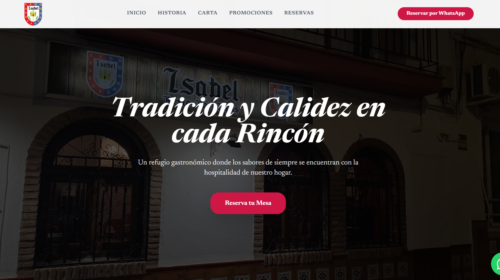
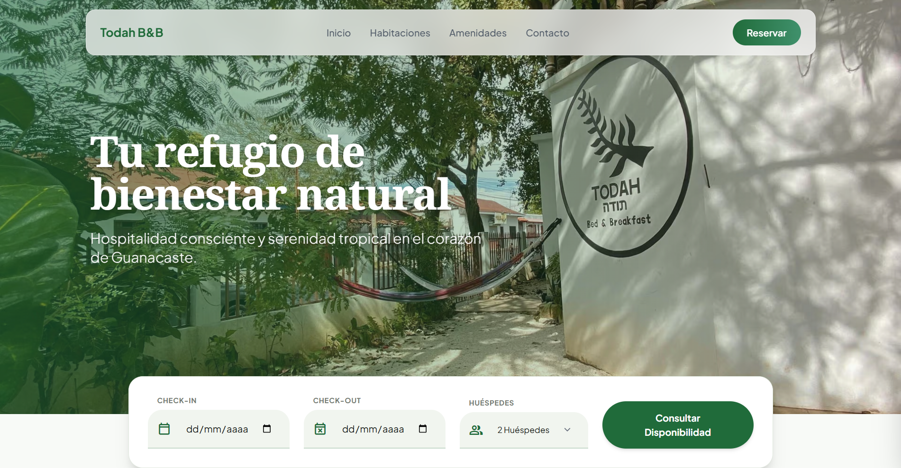
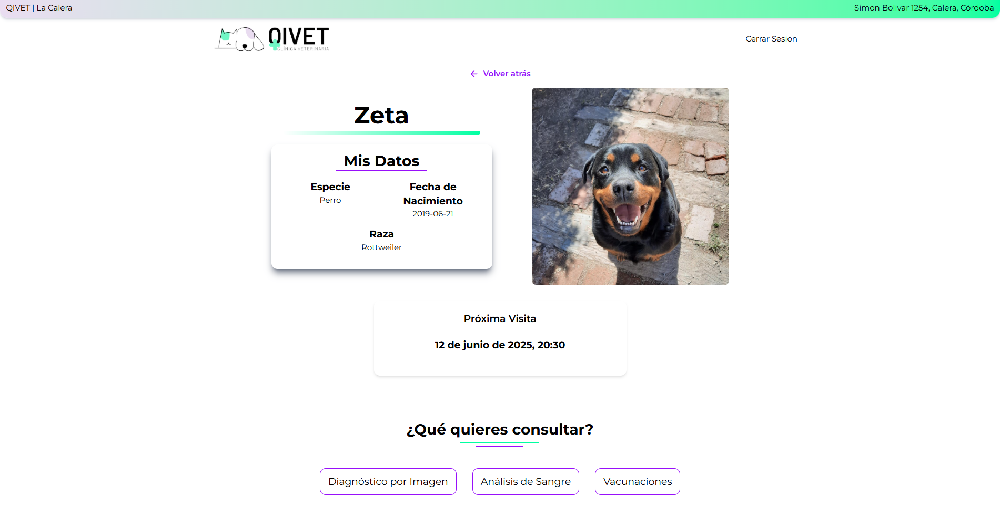
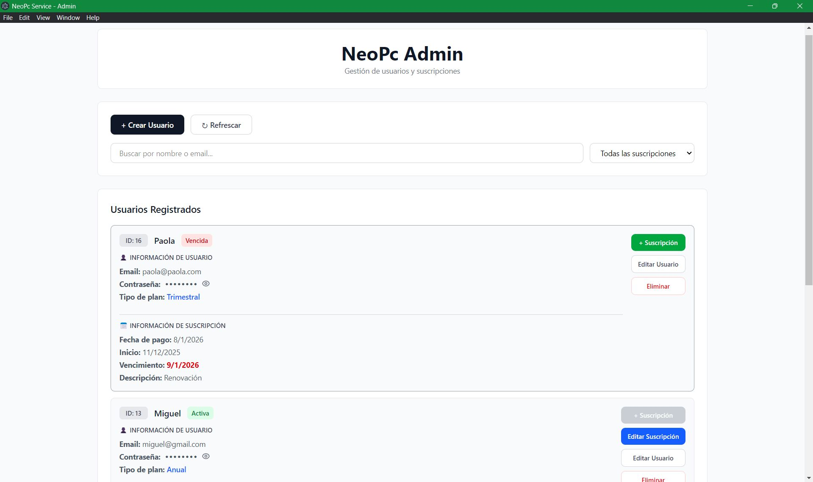

Desarrollo web orientado a resultados
Nicole
Webs rápidas y optimizadas para SEO.
Pensadas para convertir visitas en clientes.
Conóceme
Sobre mí
Me interesa especialmente el desarrollo de páginas rápidas, optimizadas para SEO y pensadas para convertir visitantes en clientes.
Actualmente sigo formándome en desarrollo web y marketing digital para aportar el máximo valor en cada proyecto.
Desarrollo web orientado a negocio
Creo webs rápidas, optimizadas y pensadas para convertir visitas en clientes.
Optimización y rendimiento
Desarrollo aplicaciones eficientes, con tiempos de carga rápidos y estructura preparada para SEO.
Soluciones digitales
Diseño soluciones que mejoran la experiencia de usuario y ayudan a alcanzar objetivos reales de negocio.
Experiencia
Lo que puedo aportar
Desarrollo web
Creación de webs rápidas, responsive y orientadas a conversión
SEO básico
Estructura optimizada para posicionamiento en Google
Backend & APIs
Desarrollo de APIs escalables con Node.js y Express
Bases de datos
Gestión de datos con MongoDB y MySQL
Rendimiento
Optimización de velocidad y experiencia de usuario
Herramientas
Git, Docker y buenas prácticas de desarrollo
Proyectos
Casos de trabajo

Restaurante · Negocio local
Web para restaurante en Nerja
Desarrollo de una web orientada a mejorar la presencia online y facilitar la captación de clientes.
- Problema: No tenía presencia online ni generaba reservas desde internet.
- Solución: Web responsive optimizada para SEO local y experiencia de usuario.
- Resultado: Base digital preparada para aumentar visibilidad y captar clientes.

Alojamiento rural · Negocio local
Web para alojamiento rural
Desarrollo de una web orientada a mejorar la visibilidad online y facilitar la captación de reservas.
- Problema: Baja visibilidad en internet y dificultad para captar reservas directas.
- Solución: Web responsive optimizada para SEO y enfocada en mostrar el alojamiento de forma atractiva.
- Resultado: Mejora de presencia online y base preparada para aumentar reservas.

Clínica veterinaria · Gestión interna
QIVET · Sistema de gestión veterinaria
Aplicación web diseñada para optimizar la gestión de clínicas veterinarias, mejorando la organización y el control de pacientes.
- Problema: Gestión manual de citas y pacientes, con pérdida de tiempo y desorganización.
- Solución: Desarrollo de sistema con gestión de citas, historial médico y control de diagnósticos.
- Resultado: Mejora en la organización interna y optimización del flujo de trabajo.

Plataforma digital · Gestión de suscripciones
NeoPc Admin · Gestión de suscripciones
Aplicación desarrollada para optimizar la gestión de usuarios y suscripciones en una plataforma de streaming.
- Problema: Gestión manual de usuarios, pagos y renovaciones, generando errores y pérdida de tiempo.
- Solución: Desarrollo de aplicación de escritorio con control de usuarios, planes y pagos.
- Resultado: Mejora en la organización y automatización de procesos internos.
Conectemos
Contacto
¿Tienes un proyecto en mente?
Me encantaría escuchar sobre tus ideas
y cómo podemos trabajar juntos.